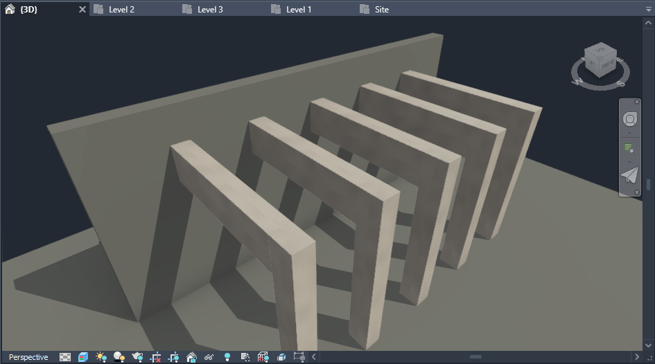

Introduction
Codarch is a comprehensive project aimed at developing a suite of tools to enhance and streamline the Revit workflow. Currently, Codarch includes two major tools: SynCad and OffsetMax, with plans to expand and introduce more tools in the future.
SynCad
SynCad automates the creation of Revit elements from AutoCAD floor plans by leveraging the layer names of AutoCAD objects. This tool streamlines the transition from AutoCAD to Revit, allowing architects to convert their drawings into Revit elements quickly and efficiently. By automating this process, SynCad reduces the time spent on manual tracing, enabling architects to focus more on design. Currently, it converts Walls, Doors, Windows, Columns, Grids, and Beams, with plans to support more Revit categories in future releases.
OffsetMax
OffsetMax adjusts wall top offsets to slabs and beams one level above its base level. OffsetMax modifies wall top offsets to align with slabs and beams, ensuring accurate volume estimation. If walls intersect with beams perpendicularly, you have the option to bore the walls so the beams can pass without overlapping. All in all the tool's main objective is to achieve clean intersections - which will result in accurate schedules and estimations.
Codarch is committed to enhancing the Revit workflow by providing tools that save time, reduce manual effort, and improve design accuracy. With SynCad and OffsetMax, architects and designers can focus on creating innovative and impactful designs. Stay tuned for more tools and updates from Codarch!
System Requirements
To ensure smooth operation of the Codarch tools, your system should meet the following requirements:
- Software: Autodesk Revit 2025. Please note that Codarch is currently compatible with Revit 2025 only. Future updates will extend compatibility to Revit 2024, 2023, 2022, and 2021.
- Architecture: As Revit 2025 is a 64-bit application, a 64-bit operating system is required to run the add-in.
Please ensure that your system meets these requirements before installing the Codarch add-in. This will help to avoid any potential issues and ensure the add-in functions as intended.
Installation
Standard text
SynCad
SynCad needs a proper layer-organized AutoCAD (dwg) floor plan in order to do its job. The output of the automation process (i.e. your Revit model you get using the SynCad tool) is only as good as your layer naming, proper representation of the various elements in the dwg and the precision of your drawing.
Preparing Your CAD Floor Plan
To better understand how the tool works in no time, start with a very simple floor plan. You can also download CodarchTest.dwg file which is already setup properly. You can use it to experiment with the SynCad tool. Alternatively you can open your own floor plan dwg file in AutoCAD and make sure your AutoCAD floor plan objects are organized by layer names and that the layer names are prefixed with Revit category names.
Organize your floor plan by layers
You can’t use the SynCad tool if your floor plan dwg is not properly organized by layers.
Every element you want to see created separately in Revit must have a unique layer name in the AutoCAD file.
Prefix layer names with Revit Category names
Currently available category names are Walls, Windows, Doors, Columns and Beams.
| Assumed Existing Layer Names | Layer Names After Prefixed with Category |
|---|---|
| 20cmBrickExterior | Walls_20cmBrickExterior |
| 15cmInteriorHCB | Walls_15cmInteriorHCB |
| 70cmToiletsDoor | Doors_70cmToiletsDoor |
| 90cmDoor | Doors_90cmDoor |
| 120cmBedRoomWin | Windows_120cmBedRoomWin |
| 150cmBedRoomWin | Windows_150cmBedRoomWin |
| 70cmTopWin | Windows_70cmTopWin |
| 30x40cmStrColumn | Columns_30x40cmStrColumn |
| S_GRID | Beams_S_GRID |
NB: the axis lines layer name is what you prefix with Beams_. This will enable the addin create Grids and Beams in Revit at the same time.
You can name your layers in whatever naming style you like but don’t forget to prefix them with Revit category names (i.e, Walls_, Doors_, Windows, Columns_ and Beams_). The category names are how the addin identifies what category the object belongs to and how to process it.
Object Representation
Every architectural studio has its own standard or rules for representing the various elements in AutoCAD drawing. Worse, every individual architect or draftsperson may use different styles and rules for representing objects in AutoCAD drawing. This makes it difficult to find an all encompassing standard that we can use to communicate among studios and individual professionals alike. For this reason this addin doesn't adhere to any standard, instead it uses very simple rules for representing AutoCAD objects for the various elements
Walls
Walls are represented by a pair of parallel lines the wall’s width apart. You can’t use single lines to represent walls and use SynCad tool to convert them to Revit walls. All walls of the same layer can’t have different widths. Make sure that every wall in the same layer has the same width. This means you can’t have wall lines that are 15cm wide and 20 cm wide within the same “Walls_20cmExteriorBrick” layer name – all widths must be the same

In the image to the left all 15cm apart lines are of the same layer and all 20cm apart lines are of another layer. This is correct because all the same layer lines have the same gap (i.e wall's width). To the right all lines are of the same layer but they have different gaps. That is not allowed in SynCad because all lines of the same layer are assumed to have the same gap(i.e. the same wall width)
Doors
For SynCad tool to create doors properly the CAD file must represent doors at least with two objects - a line that represents the leaf and an arc that represent the swing.
NB: The Swing must be a quadrant (i.e quarter of a circle or 90 degrees arc)
- The Leaf and the Swing are what SynCad uses to create the Revit doors. So make sure:
- The door is aligned to the interior side of the wall.
- You can use AutoCAD blocks to make the doors. Make sure all objects inside the block are of the same layer too.
- Arcs above or below 90 degrees are not considered as door swings so make sure your swings are exactly quarter of a circle.
Windows
You can use a rectangle or two parallel lines to represent a window. You can decorate your CAD windows however you like but what the SynCad addin needs are the two outer most lines in the wall opening for the window. See picture below.
If you have lines that represent frames, glass and other parts of a window, just leave the layer names as they are and make a new layer name which is prefixed with “Windows_” and add the rectangle (or the two parallel lines that represent the window) to the new layer.
Columns
You can represent your AutoCAD Columns with four connected lines or just a rectangle.
Currently only rectangular columns are allowed.
NB: in terms of SynCad tool "Columns" is to mean a structural column and not an architectural column
Beams and Grids
SynCad creates both Grids and Beams from the same AutoCAD axis lines. This is because we usually don’t have beam layers in AutoCAD Architectural drawing. So SynCad uses the axis lines to also create the Beams.
SynCad creates beams and grids only if they are parallel and perpendicular as seen in the picture. It only creates one set of parallel and perpendicular grids and beams.
If you have other set of parallel grids in the same file, they wont’t be created. This limitation will be handled in future releases. Also the addin’s ability to make non parallel and radial grids will be incorporated in future releases.
Save your file after you make the necessary adjustments by organizing your layers, prefixing them with Revit Category names and represent them correctly as explained above.
NB: It is advisable to work on a copy of your original file, and remove layers like hatches, dimensions, furniture, etc… to make the process easier for testing purposes.
Linking Your File
If you know how to link CAD file to Revit, just link your file and skip this section and go to the Getting Started section.
In Revit 2025 click the “Manage” tab and then click the “Manage Links” button. In the dialog that shows up click the “CAD Formats” tab. To the bottom right of the same dialog find the “Add” button and click on it. In the file explorer that comes, navigate to the place where you saved the “CodeArchTest.dwg” file and select it. You can set the options before you click “Open” in the file explorer. I used “Auto - Origin to Internal Origin” for Positioning and “Level : Level 1” for Place at.
Manage tab and Manage Links button
CAD Formats tab in the Manage Links dialog
The Add button for CAD Formats
After you have selected your CAD floor plan and set the options, click “Open” in the file explorer and then “Ok” in the Manage Links dialog. Now you have successfully linked your test CAD floor plan to Revit.
Getting Started
First download both CodarchTest.dwg and CodarchTest.rvt test files. CodarchTest.rvt is a Revit 2025 project file which you can use to test the conversion of CodarchTest.dwg AutoCAD file to Revit elements. The CodeArchTest.rvt can help you in experimenting with the SynCad tool because it contains the Revit types needed for the objects in the CodeArchTest.dwg. So by downloading both of them, and then linking the CodeArchTest.dwg file into the CodarchTest.rvt project file, You can immediately test the SynCad tool without needing to prepare your own files.
Assuming you have downloaded both of the test files, lets proceed!
A => Open Autodesk Revit 2025. Then open the CodarchTest.rvt project file. check if “Codarch” is present among the tabs in the Revit UI before you proceed. The tab contains two panels - “SynCad” and “OffsetMax” each containing a button with the same name as its host tab

The Codarch tab

The SynCad and OffsetMax panels under Codarch tab
B => Link the CodarchTest.dwg to Level 1, or any other level. And click on the SynCad button to open the SynCad tool.
Clicking on the SynCad button opens the SynCad tool's UI
C => The circular 1 and 2 labels are steps you have to follow. Step 2 is disabled until you perform step 1. So for step 1 click the Link button and select/pick your link instance from the scene. When you do so the file name is shown next to the button and step 2 is enabled for selection.
When you pick a link the file name is displayed next to the button and step 2 is enabled
D =>Select a base level from the combobox(step 2 in the UI). A new “AddLayer” button will appear with a “+” label.
E =>Click the “AddLayer” button. It is the button with “+” symbol on it.
F => Now setup the added layer by selecting from a Category, a Layer and a Type. (i.e Set the layer's "Category Name", "Layer Name", and "Revit Type")
Setting up a layer
As soon as you finish setting up the first layer the "Create Revit Elements" button appears.
G =>Finally create Revit elements by clicking on the “Create Revit Elements” button or you can keep on adding other layers by clicking on the plus button (Add Layer button) to add them all to the list and, set their properties and then create them at once. To remove layers click on the “-” button next to each layer
OffsetMax Tool
The second tool in this release of the Codarch is the “OffsetMax”. It is under the same tab “Codarch” and is on the “OffsetMax” panel as a button with the same name as its panel.
Walls crossing beams perpendicularly can be made to have openings using the OffsetMax tool. see picture below for the result of using the OffsetMax's Bore Walls option.
Using the Bore Walls option in the OffsetMax tool bores the walls so that the beams can pass without overlapping. (Beams are hidden to see the resulting holes on the walls)
To understand why the OffsetMax was needed in the first place, we must refresh our memory on how the SynCad tool works. The SynCad tool prompts the user to select a base level only. The top level for the element being created is determined by the SynCad tool itself and is one level above the element's base level. For example, if you have selected Level 1 in step 2, SynCad considers that as the base level for the elements and determines Level 2 to be their top level. For this reason walls created at Level 1 overlap with beams and slabs at Level 2. this is where the OffsetMax tool comes in handy. It adjusts a wall’s top offset from beams and slabs that are one level above the wall’s base level. It also bore walls to make beams pass through them without overlapping - if those beams are crossing the walls perpendicularly.
Although OffsetMax was developed having in mind the SynCad tool, it is by no means dependent on the SynCad tool. You can use it to achieve clean intersections for your other projects that weren't created using the SynCad tool - because its operations, unlike the SynCad tool, are not based on AutoCAD floor plan objects - instead are based on Revit elements (i.e. Walls, Beams and Slabs)
Clicking on the "OffsetMax" button on the "OffsetMax" panel opens the OffsetMax UI.
Wall Selection Options
The OffsetMax tool needs to select walls to adjust their top offsets or to bore them by reading their intersections with beams and slabs one level above their base level. For selecting walls we have two options - All walls at a specific level or All walls in the project. By default the "Walls at a level" is selected.
If you want to proceed with the default wall selection, you need to select a level. It means the OffsetMax tool will select all walls that have their base level as the Level you selected.
If you want to operate on all walls in the project, select the All Walls Options.
Offset Options
To adjust wall top offsets and bore them, the OffsetMax can operate on Beams only, on Slabs only, or on both at the same time. For that you can check/select the "Offset to Slabs", the "Offset to Beams", or Both.
Bore Options
If your walls are intersecting beams perpendicularly, the OffsetMax can bore the walls (make holes), so the beams can pass without overlapping. For that you need to check/select the "Bore Walls" option.
OffsetMax Examples
In this section, we provide examples to help you understand how to use the OffsetMax tool effectively. These examples will guide you through different scenarios and demonstrate the tool's capabilities.
Example 1: Offset to Beams
In the picture above, the walls are overlapping with the beams one level above them. We will use the OffsetMax tool to adjust them so their top face aligns with the bottom faces of the beams and avoid any intersections.
- Select the walls you want to adjust (If you select the "All Walls" option it means all walls in the project will be processed by the OffsetMax tool).
- Choose the "Offset to Beams" option.
- Click "Apply" to adjust the wall top offsets.
After applying the OffsetMax tool, top faces of the walls that are parallel and intersecting with the beams are now aligned with the bottom faces of the beams, as shown in the picture above.
Example 2: Offset to Slabs
In the picture above walls are overlapping with slabs one level above them. You can see it by the artifacts on the slab.In this example, we will adjust the top offsets of walls to align with the slabs above them and achieve clean intersections. Follow these steps:
- Select the walls you want to adjust (If you select the "All Walls" option it means all walls in the project will be processed by the OffsetMax tool).
- Choose the "Offset to Slabs" option.
- Click "Apply" to adjust the wall top offsets.
After applying the OffsetMax tool, the walls' top faces are now aligned with the bottom faces of the slabs, as shown in the picture above - no artifacts.
Example 3: Bore Walls
In this picture walls that cross beams perpendicularly are overlapping with the beams.In this example, we will bore the walls to allow beams to pass through without overlapping. Follow these steps:
- Select the walls you want to bore.
- Choose the "Bore Walls" option.
- Click "Apply" to create the bores in the walls.

After applying the OffsetMax tool, the walls now have bores/openings to allow beams to pass through without overlapping, as shown in the picture above. (The beams are hidden so that you can see the resulting holes in the walls.)
Support and Contact
If you need support or have any questions, please feel free to reach out to us. You can contact us via email at your-email@gmail.com.
For more detailed inquiries, please use the contact form on our website: Contact Form.